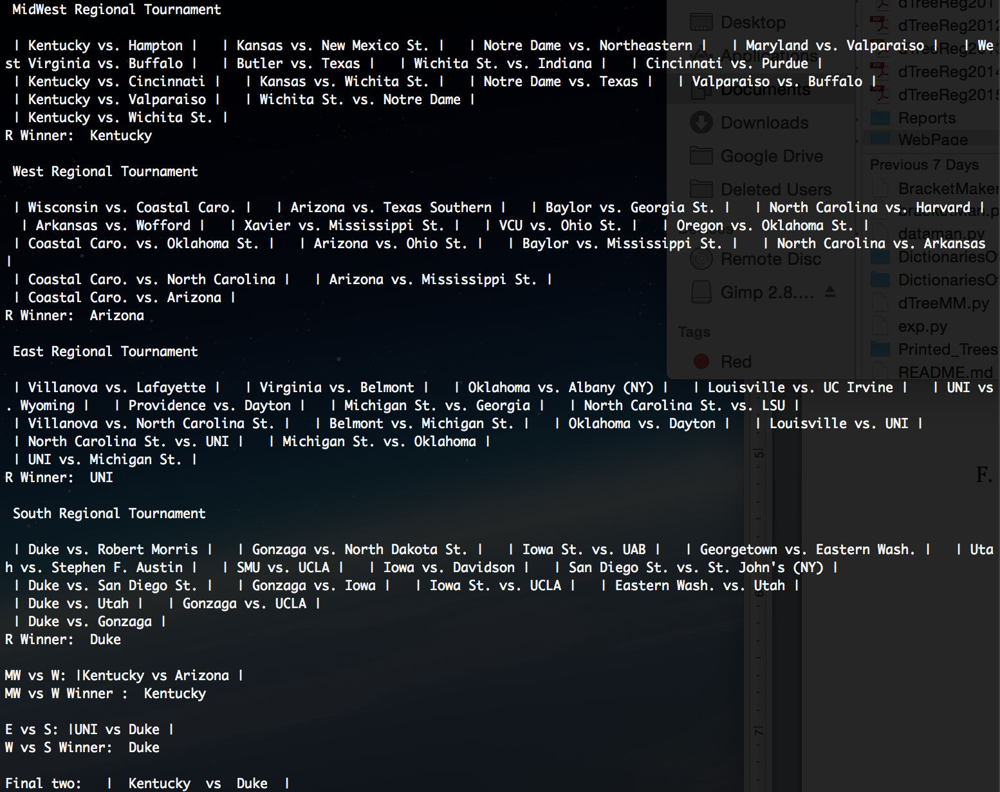

We were motivated to find a way to generate a perfect bracket or a better bracket than average based on the idea that it is a mathematically interesting task and economically advantageous. It is mathematically interesting because the predicted odds of getting a perfect bracket are 1 in 1,610,543,269 (for the year 2015). Additionally, it is economically advantageous because we can make money by betting with our friends and others on who has a better bracket.
We used a Decision Tree from the Scikit library. We took in many features about a team’s stats and the regular season game stats and took the differential of these features so we ended with point differential, rebound differential, FG percentage, and other features. Additionally, we limited the size of our tree to prevent over fitting.
We trained our decision tree with the team stats over the season* as our features and whether a team won a game as the output space and restricting our training set to the regular season. Then we measured our success originally based on the percentage of games that we guessed correctly in the playoffs.
We found that defensive point differential (opponent team points allowed) is the most important feature in our decision tree. Our solution performed well in our first analysis of how many games it was able to correctly predict with 79% accuracy in the 2015 season.
*The team stats we used were for the whole season because we couldn't seperate the playoffs from the regular season for team statistics unfortunately
>>>>>>> a2139d20ddc36235017c66463ea0c10d3f40ad67